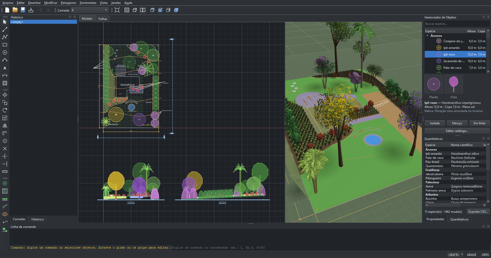
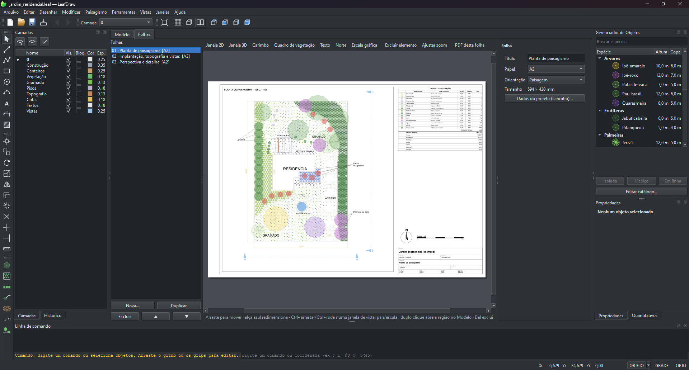

LPLRECCAHCOTTRO
Desenho 2D com linha de comando
Linhas, polilinhas, arcos, hachuras e cotas, com snap em objetos, modo orto, grips e coordenadas digitadas. Tudo em metros, tudo desfazível.
Desenhe a planta, plante por espécie, confira em 3D e imprima as folhas em PDF. Software livre, para Windows, Linux e macOS.
Versão 0.1.0 RC 1 · GPLv3 · gratuito

O LeafDraw tem as ferramentas de um CAD 2D e entende o que é uma espécie, um maciço e um quadro de vegetação. As siglas abaixo são os comandos que você digita.
Linhas, polilinhas, arcos, hachuras e cotas, com snap em objetos, modo orto, grips e coordenadas digitadas. Tudo em metros, tudo desfazível.
Plantas isoladas, em linha ou em maciço com malha triangular ou quadrada. Rótulos contam as mudas e o painel de quantitativos soma por espécie e exporta CSV.
Espécies com nome popular e científico, altura, copa e símbolo. Crie as suas, importe blocos de DXF/DWG como símbolo e use modelos 3D em glTF. O projeto leva junto as espécies que usa.
Curvas e cotas de nível viram um terreno triangulado. Plantas, pisos e maciços se assentam sobre ele, e a vista 3D acompanha a planta enquanto você desenha.
Trace a linha de corte e escolha o lado: a vista é montada com a silhueta de cada espécie apoiada no terreno. Mover ou trocar uma planta refaz o desenho.
Abre e grava DXF e DWG (R2000 a 2018), com camadas, blocos, hachuras e cotas. Levantamentos em UTM podem ser trazidos para perto da origem.
Folhas A0 a A4 com margens ABNT, carimbo, norte, escala gráfica e quadro de vegetação preenchido pelo próprio desenho. O PDF é vetorial, no tamanho real do papel.

Qualquer tecla na planta vai para a linha de comando. Enter ou Espaço confirmam; Enter vazio repete o último comando.
Coordenadas: 10,5 absoluta, @3,4 relativa, @5<45 polar, ou só um número para a distância na direção do cursor.
É uma versão candidata: funciona de ponta a ponta, mas ainda pode ter arestas. Se encontrar um problema, abra uma issue.
Windows 10 ou 11 de 64 bits, placa de vídeo com OpenGL 3.3. Não precisa de administrador.
O instalador ainda não é assinado digitalmente. Em “O Windows protegeu o computador”, clique em Mais informações → Executar assim mesmo.
64 bits com glibc 2.35 ou mais nova (Ubuntu 22.04+, Debian 12+, Fedora 36+) e OpenGL 3.3.
Extraia o arquivo e rode ./LeafDraw. O ./instalar.sh é opcional: põe no menu de aplicativos e associa os arquivos .leaf. Se o Qt reclamar do plugin “xcb”, instale libxcb-cursor0.
macOS 11 ou mais novo. Abra o .dmg e arraste o LeafDraw para Aplicativos.
O aplicativo ainda não é assinado nem notarizado. Abra Ajustes do Sistema → Privacidade e Segurança e clique em Abrir Mesmo Assim, ou rode xattr -dr com.apple.quarantine /Applications/LeafDraw.app no Terminal.
Confira os arquivos com o SHA256SUMS.txt. Versões anteriores e notas ficam nas releases.